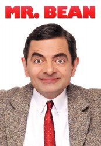

")
 
 IMDB-Wertung: 8.5 / 10
IMDB-Wertung: 8.5 / 10  Metascore:
Metascore: 
Der Tollpatsch Mr. Bean (Rowan Atkinson) wird vom Alltag immer wieder vor schier unüberwindbare Fallen gestellt, die er dennoch mit absurden Ideen oder seinem Mini-Cooper umschifft. Regelmäßige Gäste sind Beans geliebter Teddy und ein dreirädriges Gefährt, ein Reliant Regal, den Bean mehr oder weniger versehentlich von der Straße schubst.Die Reihe kam fast komplett ohne Text aus und lebte hauptsächlich vom Gummigesicht Atkinsons. Die Kunstfigur Mr. Bean wurde in Deutschland berühmter als Atkinson selbst. Dessen Namen kannten wenige, doch Mr. Bean war ein Begriff. Auf dem deutschen Filmplakat zu "Vier Hochzeiten und ein Todesfall" ("Four Weddings And A Funeral"; 1994), in dem Atkinson eine Nebenrolle spielte, wurde er deshalb als Mr. Bean angekündigt. In Großbritannien war Mr. Bean weit weniger erfolgreich. Dort brachte bereits die Vorgängerserie Black Adder in den 80er-Jahren Atkinson Starstatus ein. Diese lief bei uns erst viel später und ging weitgehend unter, obwohl RTL ihr den umständlichen, doch sprechenden Titel Rowan Atkinson alias Mr. Bean ist "Black Adder" gab.Die halbstündigen Mr. Bean-Folgen liefen zunächst dienstags um 22.05 Uhr, später freitags um 18.55 Uhr. Eine einzelne Folge hatte das Südwestfernsehen bereits ein Jahr vor dem ARD-Start gezeigt, fünf Folgen liefen 1994 noch vor der ARD-Ausstrahlung bei arte. Innerhalb von fast fünf Jahren waren nur 13 Folgen zu sehen, nach fast sechs Jahren, in denen nur Wiederholungen liefen, kam noch eine neue dazu.
Jahr: 1990
Dauer: 25 Minuten
FSK:
Land: England Studio: Comedy CentralTonspuren:
Untertitel:
Auflösung: SD (704x528) Größe: 325 MB
Genre: Komödie, Familie, TV-Serie
Regisseur: John Birkin, Paul Weiland, John Howard Davies
Drehbuch: Tom K. McCarthy
Soundtrack:
Darsteller:
 Rowan Atkinson als Mr. Bean
Rowan Atkinson als Mr. Bean Rupert Vansittart als Guardsman
Rupert Vansittart als Guardsman Richard Briers als Mr. Sprout
Richard Briers als Mr. Sprout Roger Lloyd Pack als The Waiter
Roger Lloyd Pack als The Waiter Andy Bradford als
Andy Bradford als Datei: X:\Dokumentationen\Comedy\Mr Bean\E01 Mr Bean.avi seit 17.01.2017
Festplatte: HD Serien(SU-Z)+Dokus+Musik
 Es gibt insgesamt 30 Filme in der Gruppe 'Dokumentationen\Comedy'
Es gibt insgesamt 30 Filme in der Gruppe 'Dokumentationen\Comedy'